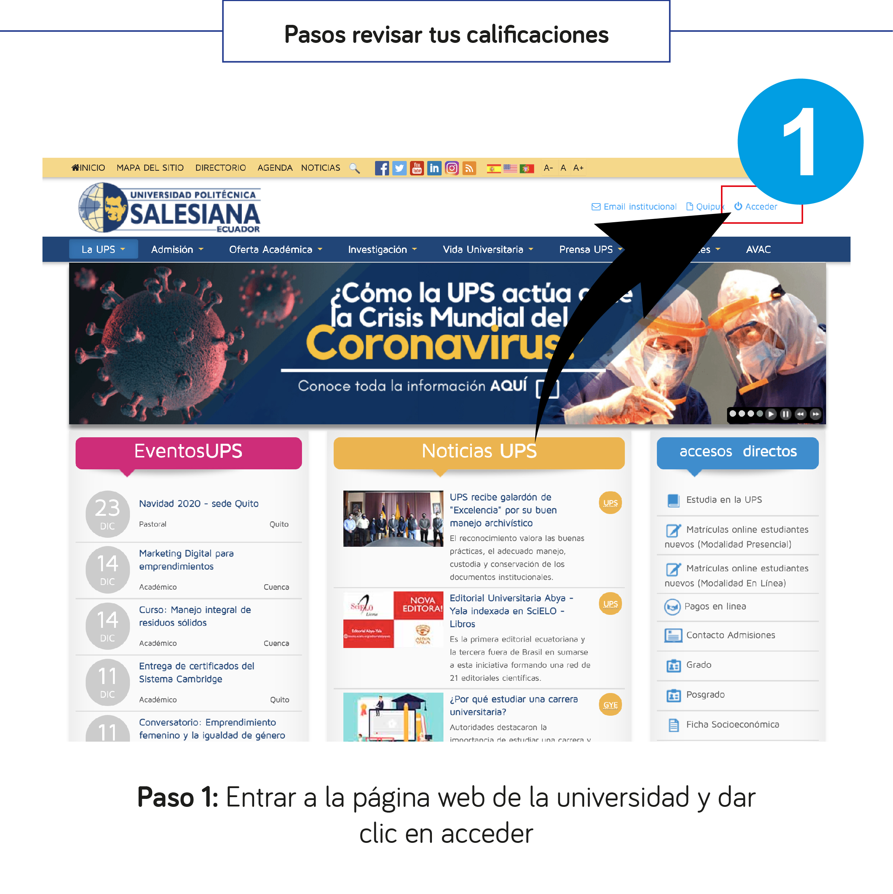
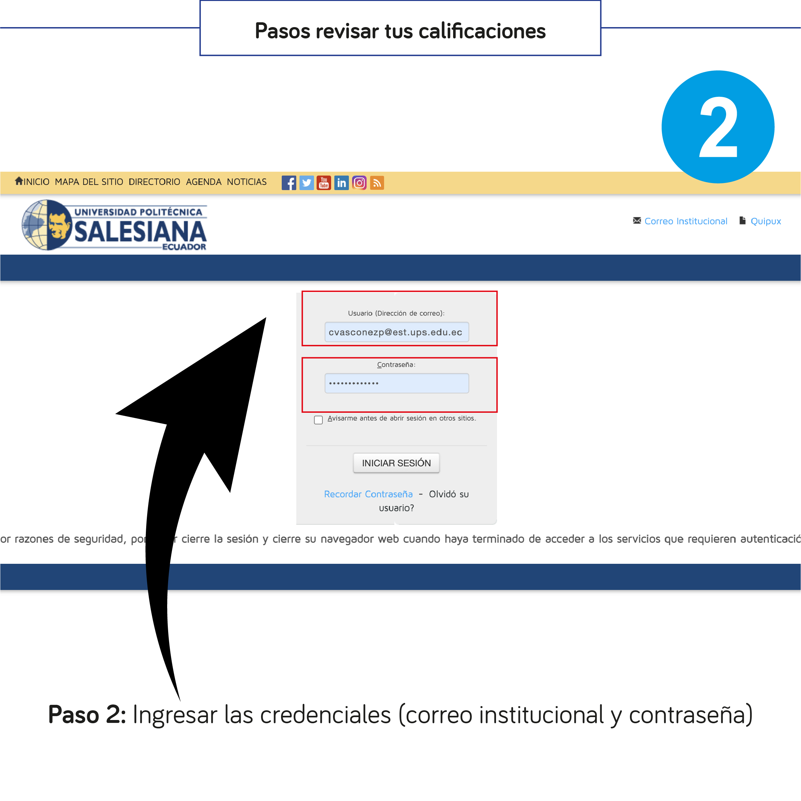
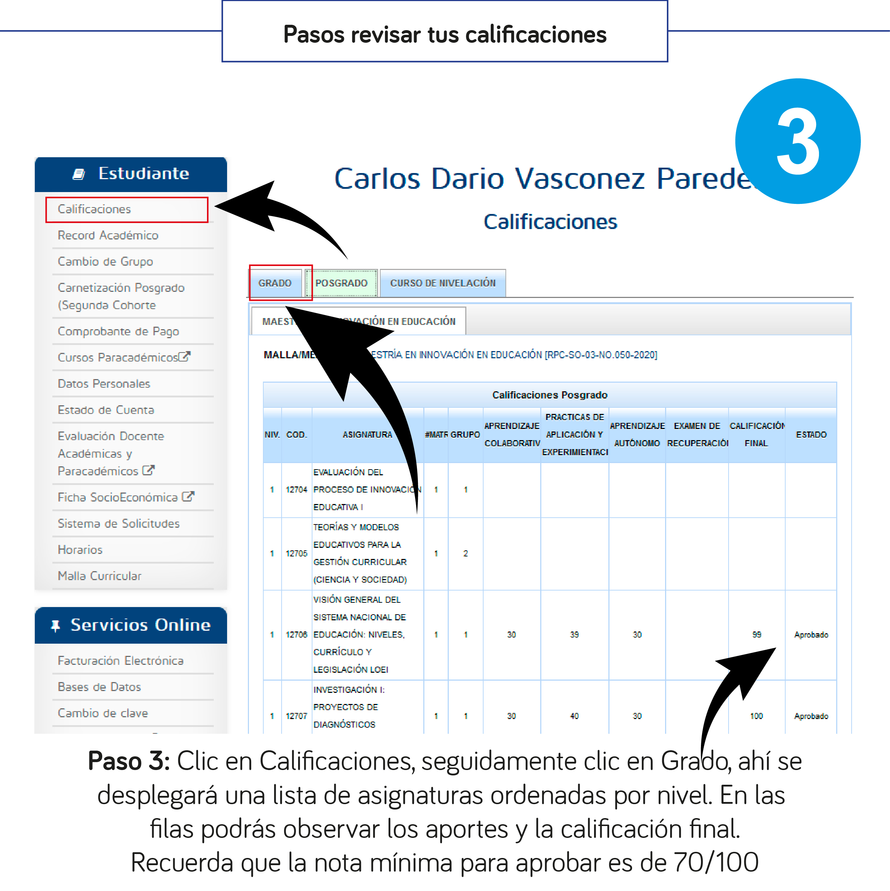
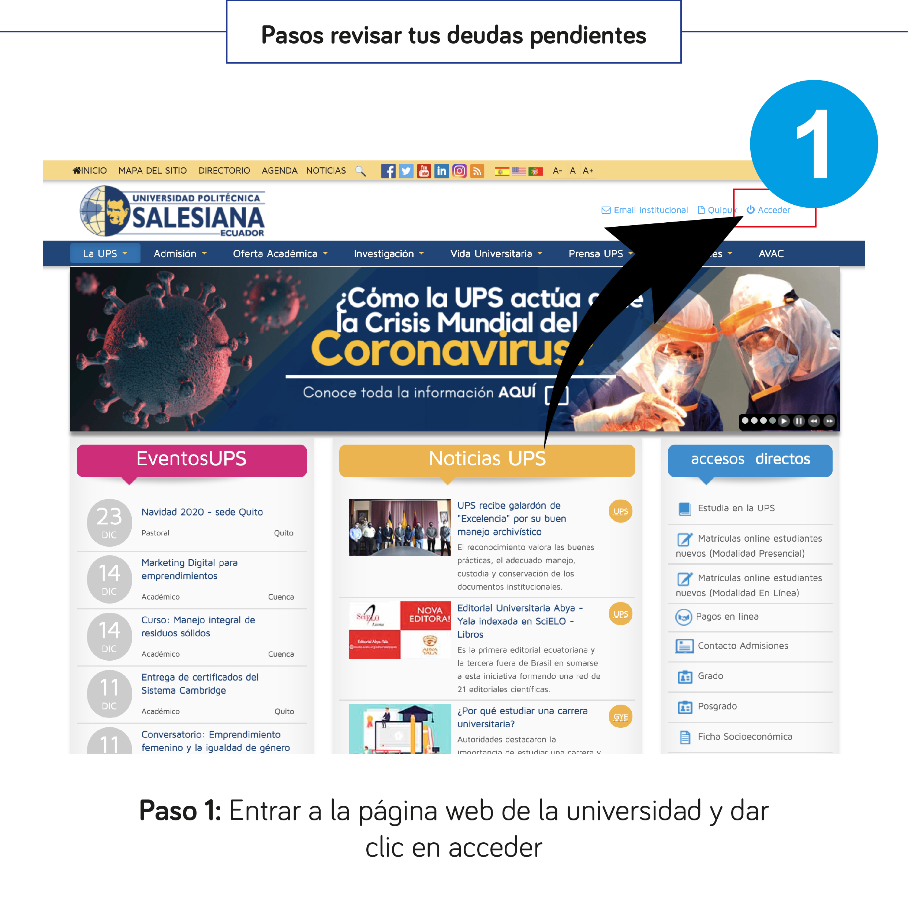
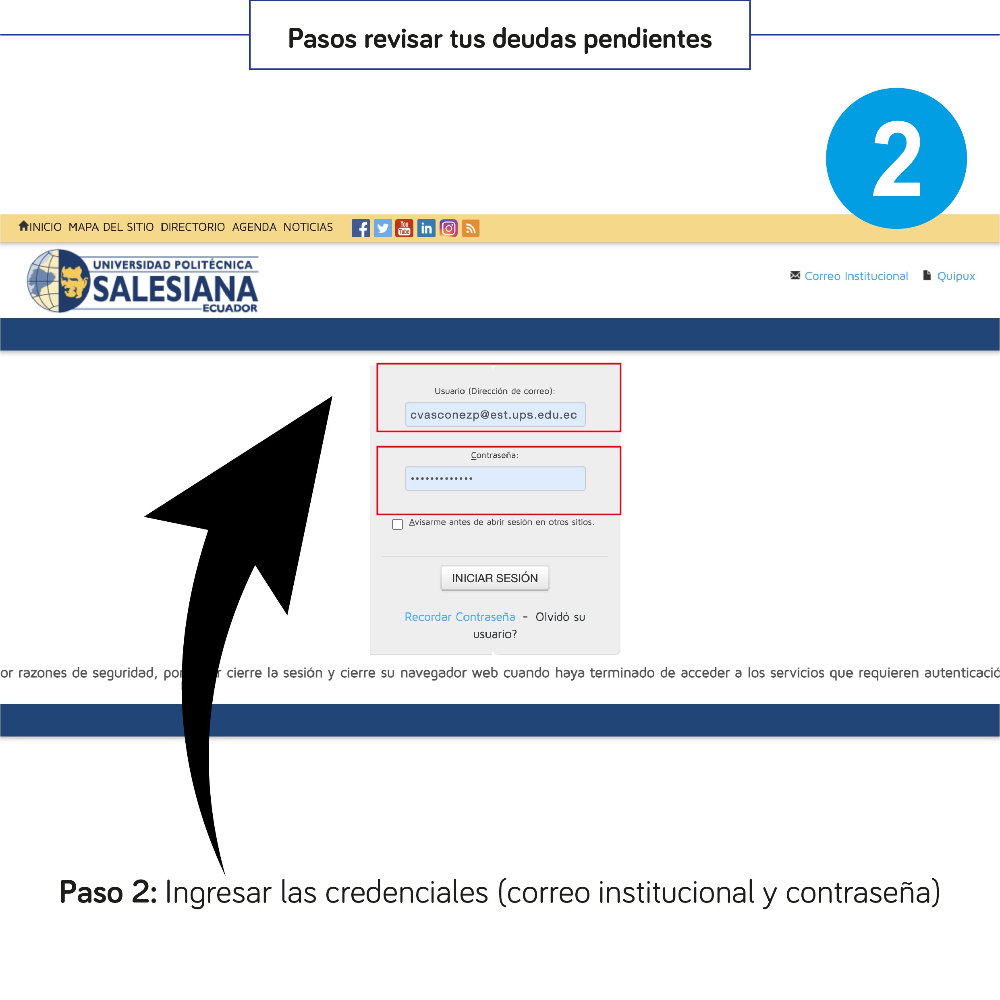
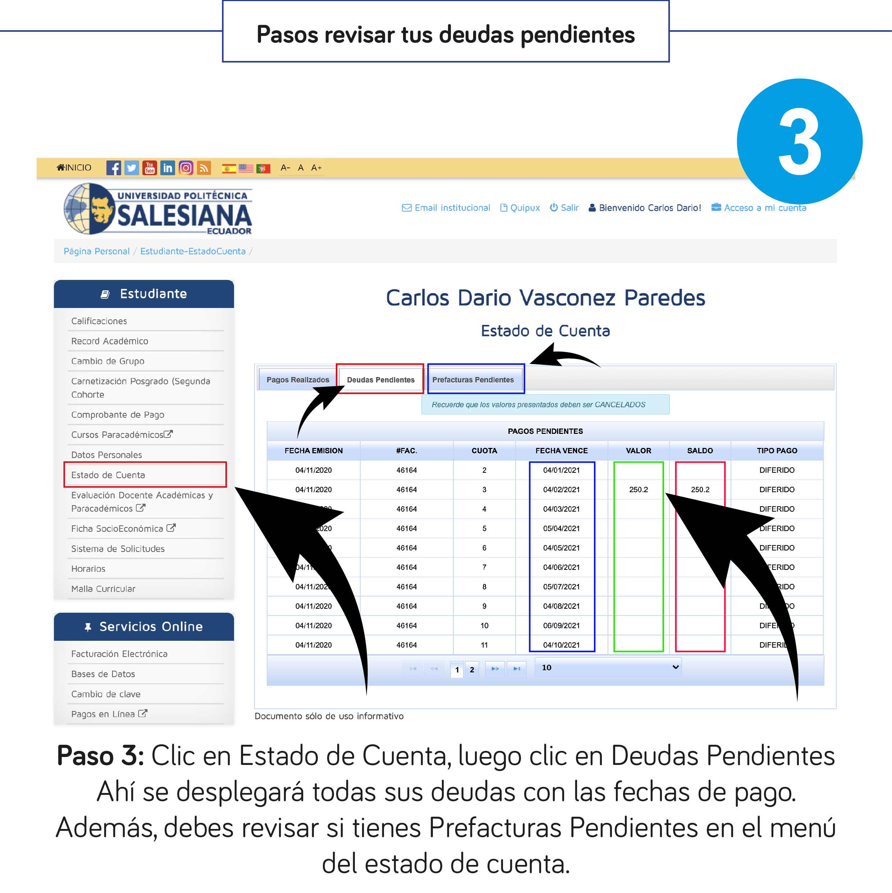
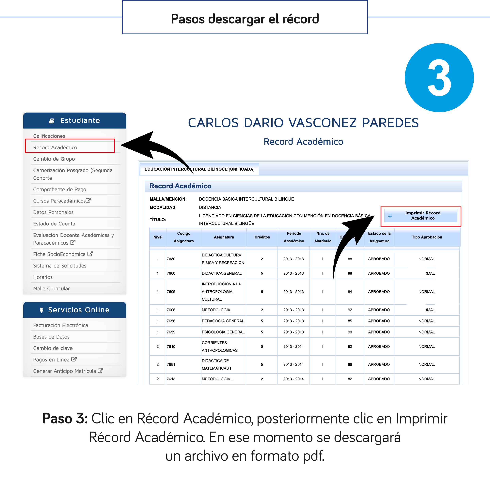

Guía del Estudiante
Modalidad En Línea — Tutoriales paso a paso para gestionar tus trámites académicos, consultas y servicios universitarios.
📚 Plataformas y Acceso
Acceso al AVAC
Ingresa a tus aulas virtuales
Recuperar Contraseña
Restablece tu clave de acceso
Activar 2FA
Seguridad de doble factor
🎓 Consultas Académicas
Ver Calificaciones
Consulta tus notas por asignatura
Descargar Récord
Obtén tu récord académico en PDF
Evaluación Docente
Evalúa a tus profesores
📝 Trámites
Solicitud de Práctica
Trámite de asignación de práctica
Certificados Electrónicos
Solicita certificados en línea
Retiro Académico
Proceso de retiro de materias
Adición de Créditos
Solicita créditos adicionales
🇬🇧 Idiomas
Exámenes de Inglés
Calendario, costos y tipos de examen
Info CEST Cambridge
Descripción y práctica del examen
🚑 Bienestar Estudiantil
Seguro contra Accidentes
Cobertura, clínicas y proceso de reembolso
💰 Finanzas y Pagos
Revisar Deudas
Consulta tu estado de cuenta
Botón de Pagos
Paga en línea con tarjeta
Pago Bco. Pichincha
Banca web y ventanilla
Becas
Tipos de becas disponibles
📧 Comunicación
Escribir un Correo
Cómo redactar un correo formal
Carnet Digital
Tutorial en video
Canales de Comunicación
Contactos oficiales
Pasos para entrar al AVAC
El AVAC (Ambientes Virtuales de Aprendizaje Cooperativo) es la plataforma donde encontrarás tus aulas virtuales, materiales de clase, tareas y enlaces de videoconferencias.
Entra a ups.edu.ec y da clic en el botón "Acceder" que se encuentra en la esquina superior derecha.

Escribe tu correo institucional (ejemplo: tunombre@est.ups.edu.ec) y tu contraseña. Luego da clic en "Iniciar sesión".

Una vez dentro del portal, busca la sección "AVAC" (Ambientes Virtuales de Aprendizaje Cooperativo) y haz clic en el enlace.

Se abrirá la ventana de inicio de sesión de Microsoft. Ingresa tu correo institucional y haz clic en "Siguiente", luego escribe tu contraseña y da clic en "Iniciar sesión".

Da clic en la tarjeta "EN LÍNEA - Vigente" que muestra tu plataforma única y el número de cursos en los que estás matriculado.

Verás todas tus asignaturas organizadas en tarjetas de colores. Haz clic en la materia que deseas para ingresar a su aula virtual.

Dentro del aula encontraras: el nombre de la asignatura y del profesor, las unidades de contenido, los enlaces a clases en vivo (Zoom), las actividades de aprendizaje, recursos descargables y la sección de entrega de tareas.

Pasos para revisar tus calificaciones
Consulta tus aportes y calificaciones finales de cada asignatura. La nota mínima para aprobar es de 70/100.
Entra a ups.edu.ec y da clic en "Acceder" en la esquina superior derecha.

Escribe tu correo institucional y tu contraseña, luego haz clic en "Iniciar sesión".

En el menú izquierdo de "Estudiante", haz clic en "Calificaciones". Luego selecciona la pestaña "Grado". Verás una lista de asignaturas ordenadas por nivel con los aportes y la calificación final.

Pasos para recuperar tu contraseña
Si olvidaste tu contraseña del portal UPS, sigue estos pasos para restablecerla. La nueva contraseña debe contener mayúsculas, minúsculas y números.
Entra a ups.edu.ec y da clic en "Iniciar sesión".

En la pantalla de inicio de sesión, haz clic en el enlace "Recordar Contraseña" que aparece debajo del botón "Iniciar sesión".

Escribe tu correo institucional completo (ejemplo: tunombre@est.ups.edu.ec) y haz clic en "Continuar".

Desliza la barra de verificación hacia la derecha para confirmar que no eres un robot, y luego haz clic en "Continuar".

El sistema mostrara las opciones de recuperación. Confirma que el correo de recuperación es correcto y haz clic en "Continuar". Te llegará un correo electrónico.

Abre el correo que recibiste de no-reply@ups.edu.ec, haz clic en el enlace que contiene. Se abrirá una página donde podrás ingresar tu nueva contraseña.

Pasos para revisar tus deudas pendientes
Consulta tu estado de cuenta para ver deudas pendientes, fechas de vencimiento y montos por pagar.
Entra a ups.edu.ec y da clic en "Acceder".

Escribe tu correo institucional y contraseña, luego da clic en "Iniciar sesión".

En el menú izquierdo, haz clic en "Estado de Cuenta", luego en la pestaña "Deudas Pendientes". Ahi se desplegarán todas tus deudas con las fechas de vencimiento y montos. También revisa la pestaña "Prefacturas Pendientes".

Pasos para hacer la evaluación docente
La evaluación docente es un proceso obligatorio donde calificas a tus profesores. Es importante para la mejora continua de la calidad educativa.
Entra a ups.edu.ec y da clic en "Iniciar sesión".

Escribe tu correo institucional y contraseña.

En el menú lateral izquierdo, haz clic en "Evaluación Docente Académicas y Paracadémicos". Se abrirá el sistema de evaluaciones.

En el Sistema de Evaluaciones, haz clic en "Evaluaciones de Grado" para ver la lista de docentes que debes evaluar.

Verás una tabla con tus asignaturas y los docentes. Haz clic en cada uno para completar la evaluación. Cuando termines, aparecerá una marca verde en la columna "Estado".

Pasos para descargar tu récord académico
El récord académico es un documento oficial que resume todas tus calificaciones. Puedes descargarlo en formato PDF.
Entra a ups.edu.ec y da clic en "Acceder".
Escribe tu correo institucional y contraseña, luego da clic en "Iniciar sesión".
En el menú izquierdo, haz clic en "Récord Académico". Se mostrara tu historial completo con todas las asignaturas, créditos y calificaciones. Haz clic en el botón "Imprimir Récord Académico" (esquina superior derecha) para descargarlo como PDF.

Pasos para hacer la solicitud de práctica
Trámite para solicitar la asignación de práctica pre profesional a través del Sistema de Solicitudes.
Entra a ups.edu.ec, da clic en "Iniciar sesión" e ingresa tu correo institucional y contraseña.

En el menú lateral izquierdo de "Estudiante", busca y haz clic en "Sistema de Solicitudes". Luego da clic en "Nueva Solicitud".

En la lista de Asuntos Academicos, selecciona "Solicitud de Autorizacion de Inscripcion de Asignatura de Práctica Pre Profesional" y haz clic en "Continuar".

Trámite de adición de créditos
Proceso para solicitar la adición de créditos a través del Sistema de Solicitudes.
Entra a ups.edu.ec y da clic en "Acceder".

Escribe tu correo institucional y contraseña.

Ve a "Sistema de Solicitudes" y verifica que tu solicitud de asignación de práctica esté en estado "Aprobado". Si es así, haz clic en "Nueva Solicitud".

En la sección de Asuntos Administrativos, selecciona "Solicitud General" y haz clic en "Continuar".

Completa el formulario: en Asunto escribe "Solicitud de adición de créditos". En Destinatario busca al Director de carrera. En Contenido detalla el motivo de tu solicitud (la materia y el periodo). Finalmente haz clic en "Guardar solicitud".

Cómo escribir correctamente un correo electrónico
Guía para redactar un correo formal dirigido a tus profesores o la coordinación de carrera.
Estructura de un correo formal
Todo correo académico debe incluir los siguientes elementos:
Escribe el correo del profesor o coordinador al que te diriges.
Si es necesario, agrega en copia al coordinador de carrera u otra persona relevante.
Escribe un asunto claro y breve. Ejemplo: "Entrega Actividad 1".
Inicia con un saludo respetuoso: "Buenas tardes, licenciado/a".
Preséntate brevemente (nombre, nivel, centro de apoyo) y explica el motivo del correo de manera clara y respetuosa.
Cierra con "Muchas gracias," o "Atentamente," seguido de tu nombre.

Activar autenticación de doble factor (2FA)
La autenticación de doble factor agrega una capa extra de seguridad a tu correo institucional. Es un requisito obligatorio de la universidad.
Recursos disponibles
La universidad proporciona los siguientes materiales para guiarte en la activación del 2FA:
Mira el video tutorial completo:
Descarga el instructivo oficial para acceder al e-mail institucional con multifactor:
Descargar instructivo (PDF)
Tutorial adicional elaborado por Comunicación UPS Quito:
Ver tutorial 2FA (PDF)
Carnet Digital
Tutorial en video que muestra cómo obtener y usar tu carnet digital universitario.
Exámenes de Inglés - Instituto de Idiomas
Información sobre los exámenes de suficiencia de inglés, calendario, costos y proceso de solicitud.
📅 Calendario de Exámenes - Período 68
Los exámenes de inglés se receptan el último viernes de cada mes hasta julio de 2026.
Horarios: Las evaluaciones en modalidad en línea se receptan desde las 8:00 hasta las 14:00. El último grupo finaliza aproximadamente a las 17:00 (duración aproximada: 3 horas).
⚠️ Importante: Los horarios los determina el Instituto de Idiomas según disponibilidad de docentes evaluadores, no los estudiantes.
1️⃣ Examen de Ubicación Gratuito (Estudiantes de Nuevo Ingreso)
Examen multinivel recomendado para estudiantes con niveles intermedios o avanzados que puedan sostener una entrevista en inglés de al menos 5 minutos.
- Fecha: Miércoles 20 de mayo
- Modalidad: Vía Zoom
- Horarios: 18:00 a 20:00 o 20:00 a 22:00 (según programación)
- Costo: Gratuito
- Evaluador: Docente evaluador a través de Zoom (no se usa CEST)
2️⃣ Examen de Ubicación Pagado ($70,00)
Para estudiantes de segundo ciclo en adelante. Se realiza mediante el instrumento CEST de Cambridge.
Proceso:
- Generar la SOLICITUD EXAMEN DE UBICACIÓN en el Sistema de Solicitudes
- Seguir los pasos indicados en el sistema
- Respetar las fechas de recepción y evaluación del calendario
⚠️ Importante: Cuando un estudiante aprueba los tres niveles (A1, A2 y B1), debe generar un nuevo proceso llamado Validación de la Suficiencia de la Lengua Extranjera Mediante Evaluación ($100,00). Sin esto, la nota no se cargará.
💡 Consejo: Si tiene total seguridad de aprobar los tres niveles, recomendamos la opción de Validación directa ($100,00) en lugar de Ubicación + Validación ($70 + $100 = $170).
3️⃣ Validación de Suficiencia de Lengua Extranjera ($100,00)
Recomendada para estudiantes con bases muy sólidas en el idioma. Solo existen dos posibilidades: aprobación o reprobación total.
- Ventaja: Si aprueba, no requiere procesos adicionales para legalizar la nota
- Solicitud: Se puede enviar mediante una Solicitud General
- Fechas: Las mismas del calendario de exámenes
- Instrumento: CEST de Cambridge
💰 Resumen de Costos
| Evaluación | Costo | Dirigido a |
|---|---|---|
| Ubicación Gratuito | Gratis | Nuevo ingreso |
| Ubicación Pagado (CEST) | $70,00 | Segundo ciclo en adelante |
| Validación Suficiencia (CEST) | $100,00 | Nivel avanzado (seguro de aprobar) |
| Ubicación + Validación | $170,00 | Si aprueba ubicación y luego legaliza |
Información del Examen CEST de Cambridge
El Cambridge English Skills Test (CEST) es el instrumento de evaluación utilizado por el Instituto de Idiomas a nivel nacional. A continuación, la descripción de sus componentes.
📖 Reading (Lectura)
Examen adaptativo personalizado. Duración aproximada: 20-45 minutos según tu nivel.
- Comprensión de textos cortos (avisos, mensajes, señales)
- Vocabulario y gramática en contexto (gap-fill)
- Comprensión de textos largos (opinión, propósito, idea principal)
- Completar textos con oraciones o párrafos faltantes
- Comparar y sintetizar información de múltiples textos
💡 Los resultados están disponibles inmediatamente al completar esta sección.
✍️ Writing (Escritura)
Duración: 45 minutos. Dos tareas con tiempo sugerido y mínimo de palabras.
- Parte 1 (15 min): Email - mínimo 50 palabras
- Parte 2 (30 min): Escritura para audiencia amplia - mínimo 180 palabras
⚠️ No hay corrector ortográfico. Revisa tu escritura antes de enviar.
🎤 Speaking (Expresión Oral)
Duración aproximada: 15 minutos. Examen multinivel con preparación en algunas partes.
- Parte 1: Hablar sobre ti mismo (8 preguntas, 10-20 seg cada una)
- Parte 2: Lectura de oraciones en voz alta (8 oraciones)
- Parte 3: Hablar sobre un tema (40 seg preparación + 60 seg hablar)
- Parte 4: Hacer una recomendación (60 seg preparación + 60 seg hablar)
- Parte 5: Dar opiniones (5 preguntas, 20 seg cada una)
🎧 Listening (Comprensión Auditiva)
Examen adaptativo personalizado. Duración aproximada: 20-45 minutos según tu nivel.
- Identificar información con ayuda de imágenes
- Comprensión de conversaciones y monólogos
- Preguntas de opción múltiple sobre audios largos
- Emparejar ideas principales de monólogos cortos
- Completar oraciones con información específica
💡 Cada audio se reproduce dos veces automáticamente.
🔗 Enlaces de Práctica y Simulación
Prepárate para el examen CEST con estos recursos oficiales:
Certificados Electrónicos
Ahora puedes obtener tus certificados de manera electrónica. El certificado contiene Firma Electrónica y Código QR de verificación.
Certificados disponibles
✔ Certificado de matrícula
✔ Certificado de calificaciones por período académico
Requisitos
☑ Estar legalmente matriculado
☑ No tener deudas vigentes
☑ Luego de hacer la solicitud, proceder al pago
Ingresa a tu página personal en el portal web de la UPS: appwfp.ups.edu.ec/cel
Selecciona la opción "Certificados Electrónicos" en el menú.
Elige si deseas el Certificado de Calificaciones por Período Académico o Certificado de Matrícula.
El sistema generará automáticamente el derecho de pago correspondiente.
Realiza el pago a través de los diferentes canales y medios de pago disponibles (ver sección Canales de Pago).
Ingresa nuevamente a Emisión de Certificados Electrónicos, descarga tu certificado con firma electrónica y código QR de verificación.
Canales de Pago de Matrícula y Cuotas
Para cancelar la matrícula o una cuota puedes hacerlo mediante los siguientes canales. En todos los casos, debes dar el número de cédula del estudiante e indicar que perteneces a la Universidad Politécnica Salesiana sede Cuenca.
Acércate a cualquier ventanilla del Banco Pichincha o Banco del Pacífico. Indica tu número de cédula y que perteneces a la UPS sede Cuenca.
Usa la aplicación móvil del Banco Pichincha o Banco del Pacífico para realizar el pago de manera digital.
Acude a un punto Mi Vecino del Banco Pichincha y usa el código 730 para realizar el pago.
Becas Disponibles
Si tienes un hermano/a, esposo/a, padres o hijos estudiando en la UPS, o eres hijo/a de graduados de la UPS, puedes solicitar una de las siguientes becas.
Tipos de Becas
🎓 Beca Dignidad de la Persona con Discapacidad
🎓 Beca Exalumnos Bachilleres de Obras Salesianas - SDB (Salesianos de Don Bosco)
🎓 Beca Familiar (hermanos/as, esposos o padres/hijos)
🎓 Beca Hijos de Graduados UPS
🎓 Beca Graduados UPS
Ingresa al portal de solicitudes: portal.ups.edu.ec/estudiante-solicitud
Navega a la sección de Asuntos Administrativos.
Selecciona "Solicitud de Beca" del menú de opciones.
Elige la opción de beca que corresponda y adjunta la documentación correspondiente.
Proceso de Retiro Académico
El retiro académico se realiza cuando el estudiante ha cancelado algún rubro de su matrícula y no desea continuar con sus estudios.
Se requieren dos solicitudes conjuntas
1. Solicitud de retiro de asignaturas para el nivel de grado
2. Solicitud General para exoneración de deuda o devolución de valores
Solicitud 1: Retiro de Asignaturas
Esta solicitud se puede realizar sin costo durante los primeros 30 días de clase. Después de ese plazo, deberás adquirir un derecho de $20 por cada asignatura matriculada y la solicitud se pondrá en consideración del consejo de carrera.
Para adquirir los derechos, realiza el pago y envía el comprobante a ssarmiento@ups.edu.ec
Ingresa a www.ups.edu.ec y da clic en Iniciar Sesión. Coloca tu correo institucional y contraseña.
En tu página personal, en el menú izquierdo, ingresa a Sistema de Solicitudes y da clic en Nueva Solicitud.
En Asuntos Académicos, selecciona "Solicitud de Retiro de Asignaturas para el Nivel de Grado" y da clic en continuar.
Llena tus datos personales, usa "Agregar Asignatura" para añadir las asignaturas a retirar (encuentra el código y grupo en la sección Calificaciones de tu portal), escribe los motivos del retiro y da clic en Guardar Solicitud.
Solicitud 2: Exoneración o Devolución
En Sistema de Solicitudes, bajo Asuntos Administrativos, selecciona "Solicitud General" y da clic en continuar.
Da clic en "Seleccionar Colaborador de la UPS" y busca al Vicerrector: Victor Fernando Moscoso Merchan.
En el asunto coloca la petición de exoneración o devolución. En el contenido explica los motivos del retiro. Puedes adjuntar archivos de respaldo. Da clic en Guardar Solicitud.
Botón de Pagos en Línea UPS
Paga tu matrícula o cuotas directamente desde el portal web de la UPS con tarjeta de crédito o débito. Acepta: Diners Club, Discover, MasterCard, Visa y American Express.
Ingresa a www.ups.edu.ec y da clic en el botón "Pagos en Línea".
Da clic en "Estudiantes y Colaboradores".
Da clic en "Pagos Pendientes" en el menú lateral izquierdo.
Selecciona el valor pendiente y da clic en "Continuar con el pago".
Acepta Términos y Condiciones, selecciona Débito o Crédito, elige el tipo de tarjeta, llena los datos y da clic en Continuar. Coloca el código de seguridad que recibirás en tu teléfono o correo.
Pago por Banca Virtual Banco Pichincha
Paga tu matrícula o cuotas desde la banca web del Banco Pichincha.
Ingresa a bancaweb.pichincha.com y digita tu usuario y contraseña.
Ingresa el código de seguridad de 6 dígitos que recibirás en tu correo o teléfono.
Selecciona la opción Pagos > Servicios-Facturas.
Digita "Universidad Politécnica Salesiana" y escoge la sede correspondiente (Cuenca, Guayaquil o Quito).
En Contrapartida coloca tu número de cédula. En Descripción indica el motivo del pago (ej: "pensión").
Realiza el pago y verifica el proceso de éxito de la transacción.
Pago por App Banco Pichincha
Paga tu matrícula o cuotas desde la aplicación móvil "Banca Móvil" del Banco Pichincha.
Ingresa a la aplicación "Banca Móvil" del Banco Pichincha e ingresa tu clave y contraseña.
En Operaciones, selecciona "Pagar Servicios".
Da clic en Educación y luego en Universidad.
Selecciona tu sede: Universidad Politécnica Salesiana Guayaquil, Quito o Cuenca.
En Contrapartida coloca el número de cédula del estudiante. En Descripción coloca el motivo de pago.
Verifica el valor a cancelar y da clic en "Realizar Pago".
Pago por Banca Virtual Banco del Pacífico
Paga tu matrícula o cuotas desde el Intermático del Banco del Pacífico.
Ingresa a www.intermatico.com y da clic en "Banca Virtual Personas".
Ingresa con tu usuario y contraseña del Banco del Pacífico.
Da clic en Pagos y recargas e ingresa en Pago a Instituciones.
Selecciona tipo "Centros Educativos", busca "UPS" y selecciona la sede a la que perteneces.
En el campo Código ingresa el número de cédula del estudiante.
Confirma los valores a cancelar y procesa el pago. El sistema debitará de tu cuenta.
Contacto
Canales oficiales de comunicación de la Universidad Politécnica Salesiana.
Teléfono General
📞 (02) 396 2800
Contactos de Apoyo al Estudiante
Seguro contra Accidentes
Todos los estudiantes de la UPS cuentan con un seguro contra accidentes a través de Seguros del Pichincha (CONFIMED). Este seguro cubre accidentes que ocurran dentro o fuera de la universidad.
📞 Línea de atención CONFIMED
1700 30 30 30
Llama para solicitar el servicio de red hospitalaria (Crédito Hospitalario).
🏥 Opción 1: Crédito Hospitalario
Es la forma más rápida de acceder al seguro. Acudes directamente a una clínica de la red de convenio.
Comunícate con CONFIMED para solicitar el crédito hospitalario.
Dirígete a cualquiera de las clínicas afiliadas (ver lista abajo).
El único costo que debes cubrir es el deducible. El resto lo cubre el seguro.
| Concepto | Valor |
|---|---|
| Deducible por atención | $5,00 |
| Cobertura máxima | $2.500,00 |
📋 Opción 2: Reembolso
Si te atiendes en una clínica que no pertenece a la red de convenio, puedes solicitar el reembolso presentando los siguientes documentos:
- Formulario de Reclamo (proporcionado por Bienestar Universitario)
- Informe médico o epicrisis del tratamiento
- Recetas médicas
- Facturas originales a nombre del estudiante (con cédula y dirección)
- Copia a color de la cédula del estudiante
- Copia del carnet estudiantil vigente
- Copia de la libreta o estado de cuenta bancaria (para transferencia del reembolso)
- Copia del certificado de matrícula vigente
⚠️ Importante: Las facturas deben estar a nombre del estudiante con número de cédula y dirección.
🚗 Accidentes de Tránsito
En caso de accidentes de tránsito, se aplica un proceso diferente:
El Sistema Público para Pago de Accidentes de Tránsito (SPATT) cubre los primeros $3.000 en atención médica por accidentes de tránsito.
Si los gastos médicos exceden la cobertura del SPATT, el excedente puede ser cubierto por el seguro universitario hasta el límite de la póliza.
🏥 Red de Clínicas con Convenio
A continuación se listan las clínicas y hospitales afiliados a la red CONFIMED donde puedes acceder con el crédito hospitalario. Están organizadas por región y ciudad.
📍 Región Sierra
Quito
- Hospital Metropolitano — Av. Mariana de Jesús s/n y Nicolás Arteta — Tel: (02) 399 8000
- Hospital de los Valles — Av. Interoceánica km 12.5 y Av. Florencia — Tel: (02) 600 0911
- Clínica de la Mujer — Amazonas N39-216 y Gaspar de Villarroel — Tel: (02) 245 8000
- Clínica Internacional — Av. España y 10 de Agosto — Tel: (02) 256 2556
- Clínica Pasteur — Av. España 10-55 e Imbabura — Tel: (02) 254 2669
- Northospital — Av. La Prensa y John F. Kennedy — Tel: (02) 399 7000
- Clínica Santa Lucía — Suiza y Eloy Alfaro — Tel: (02) 259 5500
- Hospital San Francisco de Quito (IESS)
Cuenca
- Hospital Monte Sinaí — Miguel Cordero 6-111 y Av. Solano — Tel: (07) 288 5595
- Hospital Santa Inés — Av. Daniel Córdova Toral 2-67 — Tel: (07) 281 7888
- Clínica Santa Ana — Av. Manuel J. Calle 1-104 — Tel: (07) 281 4596
- Clínica Latinoamericana — Av. Paucarbamba y Agustín Cueva — Tel: (07) 409 5849
- Clínica La Paz
Ambato
- Clínica Durán — Av. Rodrigo Pachano y Av. Los Guaytambos — Tel: (03) 282 2358
- Clínica Provida
- Hospital Millenium
Riobamba
- Clínica Metropolitan
- Hospital San Juan — Veloz 24-34 y Larrea — Tel: (03) 296 1688
Ibarra
- Clínica Moderna
- Clínica Mariano Acosta — Juan de Velasco 5-62 y Mejía — Tel: (06) 264 4930
Loja
- Clínica San Agustín
- Hospital UTPL — San Cayetano Alto s/n — Tel: (07) 370 1444
Azogues
- Clínica Humanitaria — Av. Andrés F. Córdova y Luis Manuel González — Tel: (07) 224 0368
Latacunga
- Clínica Latacunga — Sánchez de Orellana y Márquez de Maenza — Tel: (03) 281 2641
- Hospital Provincial General de Latacunga
Guaranda
- Clínica Bolívar
📍 Región Costa
Guayaquil
- Clínica Kennedy — Av. del Periodista y Av. San Jorge — Tel: (04) 228 9666
- Clínica Guayaquil — Padre Aguirre 401 y Gral. Córdova — Tel: (04) 256 3555
- Omnihospital — Av. Abel Romeo Castillo y Av. Juan Tanca Marengo — Tel: (04) 220 7301
- Clínica Alcívar — Coronel 2301 y Cañar — Tel: (04) 258 0030
- Hospital Clínica San Francisco
Portoviejo
- Clínica La Merced
- Clínica San Gregorio — Av. Universitaria y Calle Bolívar — Tel: (05) 263 2321
Machala
- Clínica Rojas
- Hospital Teófilo Dávila
Babahoyo
- Clínica San Agustín
Santo Domingo de los Tsáchilas
- Clínica Santiago — Av. Quito y Latacunga — Tel: (02) 275 0456
- Clínica Torres Médicas — Av. Abraham Calazacón — Tel: (02) 275 4800
Salinas
- Clínica del Sol
Chone
- Clínica San Andrés
El Carmen
- Clínica Jesús de Nazareth
📍 Región Oriente
Macas
- Hospital Básico de Macas — Tel: (07) 270 0643
El Coca (Francisco de Orellana)
- Clínica Orellana — Tel: (06) 288 1464
El Puyo (Pastaza)
- Hospital Provincial Puyo
Yantzaza
- Centro Médico Yantzaza
La Joya de los Sachas
- Hospital Básico Joya de los Sachas — Tel: (06) 289 9297
Lago Agrio (Nueva Loja)
- Clínica González — Tel: (06) 283 0940
Dayana (Zamora Chinchipe)
- Especialidades Médicas
💡 Nota: La lista de clínicas puede actualizarse periódicamente. Para confirmar la vigencia del convenio, llama al 1700 30 30 30.
👤 ¿Dónde tramitar el seguro en la UPS?
Acude a la oficina de Bienestar Universitario de tu sede para obtener el formulario de reclamo, orientación sobre el proceso y cualquier duda adicional sobre tu seguro estudiantil.